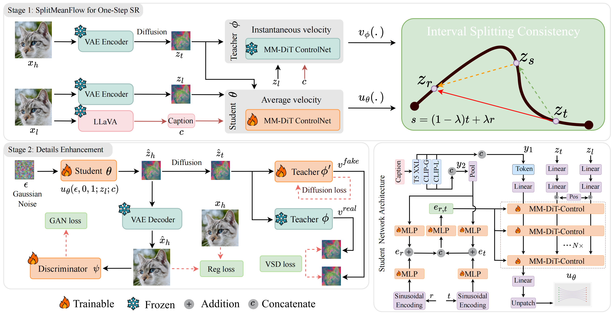
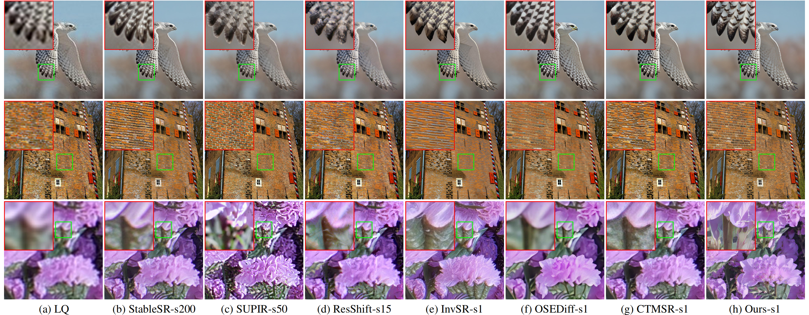
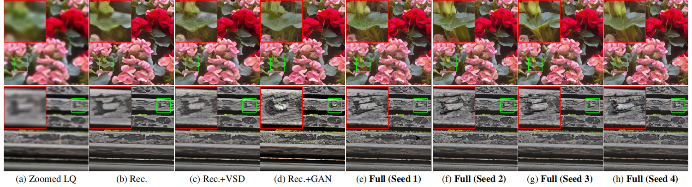

Noise-Started One-Step Real-World Super-Resolution via LR-Conditioned SplitMeanFlow and GAN Refinement
2 PCA Lab, School of Intelligence Science and Technology, Nanjing University
3 South China University of Technology
* Corresponding authors
Abstract
Pre-trained text-to-image (T2I) diffusion models have shown strong potential for real-world image super-resolution (Real-ISR), owing to their noise-started generation process that enables realistic texture synthesis and captures the one-to-many nature of super-resolution. However, diffusion-based Real-ISR methods still face a fundamental efficiency-quality trade-off. Multi-step methods generate high-quality results by iteratively denoising random Gaussian noise under LR conditioning, but suffer from slow sampling. Recent one-step methods greatly improve efficiency, yet they typically replace noise-started generation with direct LR-to-HR restoration, which weakens stochasticity and limits realistic detail synthesis.
To address this issue, we propose SMFSR, a noise-started one-step Real-ISR framework via LR-conditioned SplitMeanFlow and GAN refinement. SMFSR preserves the random-noise starting point of diffusion models and learns a direct noise-to-HR mapping conditioned on the LR image. To this end, Interval Splitting Consistency distills the multi-step generative trajectory into a single average-velocity prediction, enabling efficient one-step generation. To compensate for the reduced opportunity for progressive refinement, we further introduce a GAN refinement stage, where a DINOv3-based discriminator enhances realistic texture synthesis and variational score distillation aligns the generated outputs with the natural image distribution under a frozen diffusion teacher. Extensive experiments demonstrate that SMFSR achieves state-of-the-art perceptual quality among one-step diffusion-based Real-ISR methods while retaining fast single-step inference.
Method

Training framework of SMFSR. SMFSR is trained in two stages: (1) Noise-started one-step generation with LR-conditioned SplitMeanFlow, where Interval Splitting Consistency trains a student model to predict the average velocity from random noise to the HR latent, enabling one-step noise-to-HR sampling with r = 0 and t = 1; and (2) GAN-based detail refinement, where adversarial loss, VSD loss, and regularization loss are introduced to enhance perceptual details and visual realism.
Visual Results

Visual comparison with representative diffusion-based Real-ISR methods, where “s” denotes the number of inference steps.
Detail Refinement & Diversity

The last four columns use different random seeds, showing the stochasticity preserved by noise-started one-step generation while maintaining consistent global structure.
BibTeX
@article{zhu2026smfsr,
title = {Noise-Started One-Step Real-World Super-Resolution via LR-Conditioned SplitMeanFlow and GAN Refinement},
author = {Zhu, Wei and Zhang, Kai and Zheng, Yu and Luo, Lei and Guo, Yong and Yang, Jian},
journal = {arXiv preprint arXiv:2605.09328},
year = {2026},
url = {https://arxiv.org/abs/2605.09328}
}